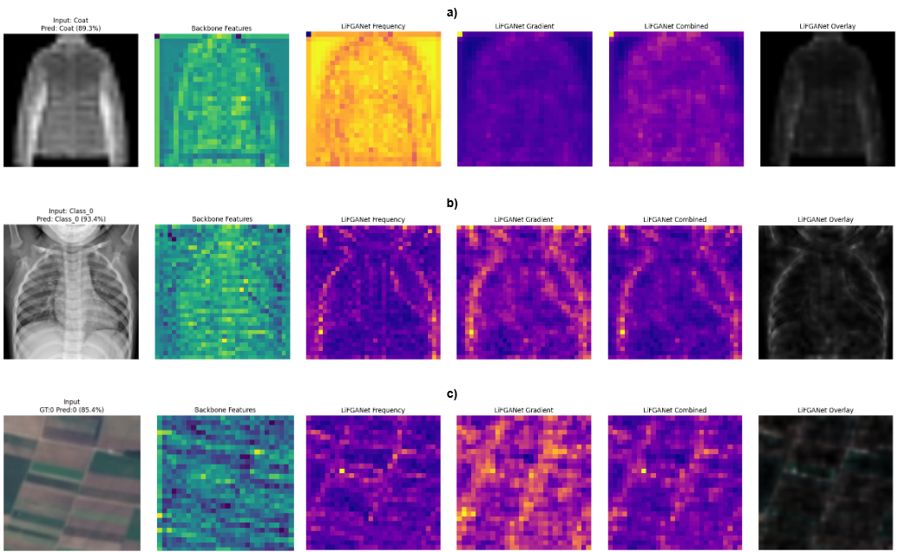

Lightweight Frequency- and Gradient-Aware Network for Robust Image Classification
1 Department of Power Engineering, Jadavpur University
2 CNH Industrial, India
3 CVPR Unit, Indian Statistical Institute, Kolkata, India
* Equal contribution | † Corresponding author: us4decaich@gmail.com
Parameters
GFLOPs
PneumoniaMNIST Acc.
BloodMNIST Acc.
Lightweight neural networks are increasingly used for image classification in scenarios where memory, computation, and energy resources are limited. However, reducing model size often results in a noticeable loss of robustness and generalization, as compact architectures struggle to learn fine-grained structural cues such as edges, textures, and high-frequency patterns. This limitation is especially evident in domains like medical imaging, microscopy, and remote sensing, where subtle spatial variations play an important role in discrimination.
In this work, we introduce LiFGANet, a lightweight frequency and gradient-aware network designed to mitigate this problem by incorporating explicit inductive biases into feature learning. Instead of increasing model capacity, LiFGANet emphasizes structurally informative representations through an efficient frequency-gradient interaction mechanism, combined with sparse feature refinement and multi-stage feature aggregation.
The proposed design remains compact, with approximately 1.3M parameters, and introduces negligible inference overhead. We evaluate LiFGANet on PneumoniaMNIST, BloodMNIST, FashionMNIST, and EuroSAT. The results show consistent and well-balanced performance across datasets, often matching or surpassing existing lightweight models with similar or larger parameter budgets.
LiFGANet consists of four tightly coupled components that inject explicit inductive biases without increasing parameter count or inference cost.
Built on a MobileNetV3-Small backbone pretrained on ImageNet. Features are extracted from stages 2, 3, and 4 (24, 48, and 96 channels respectively), preserving complementary structural cues across semantic scales.
Combines activation-based frequency saliency with spatial gradient information (horizontal + vertical finite differences) to generate a frequency–gradient attention map. Selectively amplifies activations that are both spectrally salient and spatially coherent.
Refines modulated features through sparse convolutional operations (1×1 and 3×3 convolutions) with scaled residual projections (γ = 0.2). Preserves salient information while maintaining parameter efficiency and training stability.
Features from all stages are aggregated via Global Average Pooling and concatenation. Training uses a regularized objective combining cross-entropy with label smoothing (ε=0.1) and a smoothness constraint (λ=0.01), plus lightweight Haar DWT-based frequency augmentation (p=0.1, train only).
A lightweight frequency proxy is computed from activation magnitudes, identifying spatially rich convolutional responses.
Where (i,j) indexes spatial locations and c denotes the channel index.
Frequency components are selectively emphasized using a softmax normalization with a learnable sharpness scalar α.
α is a learnable scalar controlling the sharpness of frequency selection.
Spatial gradients are computed via finite differences to distinguish structurally meaningful frequency components from spurious activations.
∇_x and ∇_y denote first-order differences along spatial dimensions, averaged across channels.
Feature maps are modulated by combining frequency weights and gradient signals — amplifying activations that are both spectrally salient and spatially coherent.
λ is a fixed scaling factor. This interaction stabilizes frequency selection and guides low-capacity models toward structurally informative representations.
A conservative update mechanism that acts as a regularizing adjustment rather than a dominant transformation.
φ(·) is GELU activation, BN is batch normalization, γ is a small scaling factor (0.2).
Refined feature maps from all stages are combined via global average pooling and concatenation.
This preserves complementary texture- and structure-level information across semantic scales without any feature pyramid network overhead.
LiFGANet is evaluated across four diverse benchmarks spanning medical imaging, biological microscopy, fashion recognition, and remote sensing.
Binary pediatric chest X-ray dataset characterized by subtle texture variations and low-contrast regions.
Microscopic blood cell images across eight classes with strong inter-class similarity and fine-grained morphological differences.
Grayscale clothing images from ten categories where classes often differ primarily in local contours and textures.
Satellite images spanning ten land-use classes, featuring complex spatial layouts and multi-scale texture patterns.
| Dataset | Accuracy | Precision | Recall | F1-score | AUC |
|---|---|---|---|---|---|
| PneumoniaMNIST | 0.9866 ± 0.04 | 0.9866 ± 0.05 | 0.9866 ± 0.04 | 0.9866 ± 0.04 | 0.9989 ± 0.02 |
| BloodMNIST | 0.9906 ± 0.03 | 0.9906 ± 0.04 | 0.9907 ± 0.03 | 0.9906 ± 0.04 | 0.9992 ± 0.01 |
| FashionMNIST | 0.9526 ± 0.06 | 0.9526 ± 0.07 | 0.9526 ± 0.06 | 0.9526 ± 0.06 | 0.9664 ± 0.05 |
| EuroSAT | 0.9811 ± 0.05 | 0.9811 ± 0.06 | 0.9811 ± 0.05 | 0.9811 ± 0.05 | 0.9921 ± 0.03 |
All improvements are statistically significant, confirmed using paired t-tests (p < 0.05).
| Method | Year | Params (M) | Accuracy |
|---|---|---|---|
| MedViT-T | 2023 | 10.8 | 0.949 |
| MedNAS | 2024 | 4.47 | 0.912 |
| IncARMAG | 2025 | 5.3 | 0.885 |
| MedKAFormer | 2025 | 12.47 | 0.9093 |
| MedViT V2 | 2025 | 12.3 | 0.951 |
| LiFGANet (Ours) | 2026 | 1.13 | 0.9866 |
| Method | Year | Params (M) | Accuracy |
|---|---|---|---|
| MedViT-T | 2023 | 10.8 | 0.950 |
| MedNAS | 2024 | 4.47 | 0.970 |
| Med-Former | 2024 | - | 0.997 |
| ViT | 2024 | - | 0.979 |
| IncARMAG | 2025 | 5.3 | 0.987 |
| LiFGANet (Ours) | 2026 | 1.13 | 0.9906 |
| Method | Year | Params (M) | Accuracy |
|---|---|---|---|
| MobileNet | 2017 | 2.23 | 0.9396 |
| ResNet18 | 2016 | 11.18 | 0.9320 |
| EfficientNet | 2019 | 4.02 | 0.9364 |
| MCNN15 | 2022 | 2.59 | 0.9404 |
| LiFGANet (Ours) | 2026 | 1.13 | 0.9526 |
| Method | Year | Params (M) | Accuracy |
|---|---|---|---|
| GeosystemNet | 2020 | 1.32 | 0.9465 |
| Deep SHAP | 2023 | 1.87 | 0.9472 |
| IBNR-65+DenseNet | 2024 | 7.9 | 0.9680 |
| ConvNeXt + LNN | 2025 | 7.8 | 0.9726 |
| LiFGANet (Ours) | 2026 | 1.13 | 0.9811 |
LiFGANet is evaluated on multiple hardware platforms. All inference time values are in ms/image.
| Model | Params (M) | GFLOPs | Accuracy | Jetson Nano (ms) | Raspberry Pi (ms) | Kaggle P100 (ms) | Kaggle T4 (ms) | CPU (ms) |
|---|---|---|---|---|---|---|---|---|
| ResNet18 | 14.63 | 1.82 | 0.9744 | 7.19 | 111.46 | 4.29 | 4.54 | 74.31 |
| DenseNet121 | 20.74 | 2.88 | 0.9770 | 17.20 | 266.64 | 22.34 | 21.66 | 177.76 |
| ShuffleNetV2 | 4.13 | 0.15 | 0.9792 | 3.70 | 57.45 | 8.58 | 9.47 | 38.30 |
| EfficientNetB0 | 4.60 | 0.39 | 0.9856 | 9.92 | 153.76 | 13.31 | 14.75 | 102.51 |
| LiFGANet (Ours) | 1.13 | 0.073 | 0.9811 | 2.53 | 39.34 | 8.48 | 9.26 | 26.23 |
Note: LiFGANet achieves the fastest CPU and Jetson Nano inference while using the fewest parameters and lowest GFLOPs among all compared models.
Comprehensive ablation on PneumoniaMNIST examining the contribution of each component.
| Variant / Component | Accuracy | Precision | Recall | F1-score |
|---|---|---|---|---|
| A: Frequency & Gradient Components | ||||
| Frequency only | 0.9778 | 0.9778 | 0.9778 | 0.9778 |
| Gradient only | 0.9781 | 0.9783 | 0.9781 | 0.9782 |
| B: Component Ablation | ||||
| w/o Frequency Augmentation | 0.9744 | 0.9746 | 0.9744 | 0.9744 |
| w/o Gradient Modulation | 0.9774 | 0.9776 | 0.9774 | 0.9774 |
| w/o Sparse Refinement | 0.9744 | 0.9747 | 0.9744 | 0.9745 |
| w/o Multi-stage Aggregation | 0.9759 | 0.9760 | 0.9759 | 0.9759 |
| C: Loss Function Ablation | ||||
| Cross-Entropy only | 0.9756 | 0.9757 | 0.9756 | 0.9755 |
| Label Smoothing only | 0.9767 | 0.9768 | 0.9767 | 0.9767 |
| Focal Loss | 0.9744 | 0.9745 | 0.9744 | 0.9744 |
| Full Model | ||||
| Frequency + Gradient (Full LiFGANet) | 0.9866 | 0.9866 | 0.9866 | 0.9866 |
Key Finding: Individually, frequency-aware and gradient-guided modeling yield modest gains. Their joint integration produces a pronounced accuracy jump — revealing strong non-trivial complementarity between spectral saliency and spatial structure.
Test-set robustness under additive Gaussian noise (σ=0.05) and Gaussian blur (kernel size 5×5). Δ↓ is the average accuracy drop.
| Dataset | ShuffleNet Clean | ShuffleNet Noise | ShuffleNet Blur | ShuffleNet Δ↓ | LiFGANet Clean | LiFGANet Noise | LiFGANet Blur | LiFGANet Δ↓ |
|---|---|---|---|---|---|---|---|---|
| PneumoniaMNIST | 0.9792 | 0.9145 | 0.9230 | 0.0647 | 0.9866 | 0.9521 | 0.9504 | 0.0345 |
| BloodMNIST | 0.9231 | 0.9088 | 0.9154 | 0.0143 | 0.9895 | 0.9502 | 0.9476 | 0.0404 |
| FashionMNIST | 0.9431 | 0.8842 | 0.8910 | 0.0589 | 0.9526 | 0.9234 | 0.9210 | 0.0292 |
| EuroSAT | 0.9784 | 0.9110 | 0.9205 | 0.0674 | 0.9811 | 0.9508 | 0.9490 | 0.0303 |
| Average Drop | - | - | - | 0.0513 | - | - | - | 0.0336 |
To assess generalization beyond domain-specific benchmarks, LiFGANet is evaluated on CIFAR-100. Under the same lightweight constraints, LiFGANet achieves 79.1% accuracy using only 1.13M parameters.
| Model | Params (M) | CIFAR-100 Accuracy |
|---|---|---|
| ResNet-18 | 14.63 | ~79–80% |
| DenseNet-121 | 20.74 | ~77–80% |
| ShuffleNetV2 | 4.13 | ~72–78% |
| EfficientNet-B0 | 4.60 | ~85–88% |
| LiFGANet (Ours) | 1.13 | 79.1% |
Visualization of feature activations and attention mechanisms in LiFGANet across different datasets. The frequency and gradient attention maps demonstrate the network's ability to focus on structurally meaningful features rather than global appearance.

Figure 3: Visualization of feature activations across FashionMNIST (row a), PneumoniaMNIST (row b), and EuroSAT (row c).
# Frequency proxy
A_k = torch.abs(F_k)
# Softmax-normalized frequency weights
W_k = F.softmax(alpha * A_k.view(B, C, -1), dim=-1).view_as(A_k)
# Spatial gradient (finite differences)
G_k = 0.5 * (torch.abs(F_k[:,:,:,1:] - F_k[:,:,:,:-1]).mean(dim=1, keepdim=True)
+ torch.abs(F_k[:,:,1:,:] - F_k[:,:,:-1,:]).mean(dim=1, keepdim=True))
G_k = F.interpolate(G_k, size=F_k.shape[-2:]) # align spatial dims
# Frequency-gradient modulated features
F_tilde_k = F_k * (1 + lam * W_k * G_k)@inproceedings{banerjee2026lifganet,
title = {{LiFGANet}: Lightweight Frequency- and Gradient-Aware Network for Robust Image Classification},
author = {Banerjee, Jotiraditya and Aich, Utathya and Bhattacharya, Ujjwal},
booktitle = {Proceedings of the International Conference on Pattern Recognition (ICPR)},
year = {2026}
}Code and implementation details will be released on GitHub after acceptance.